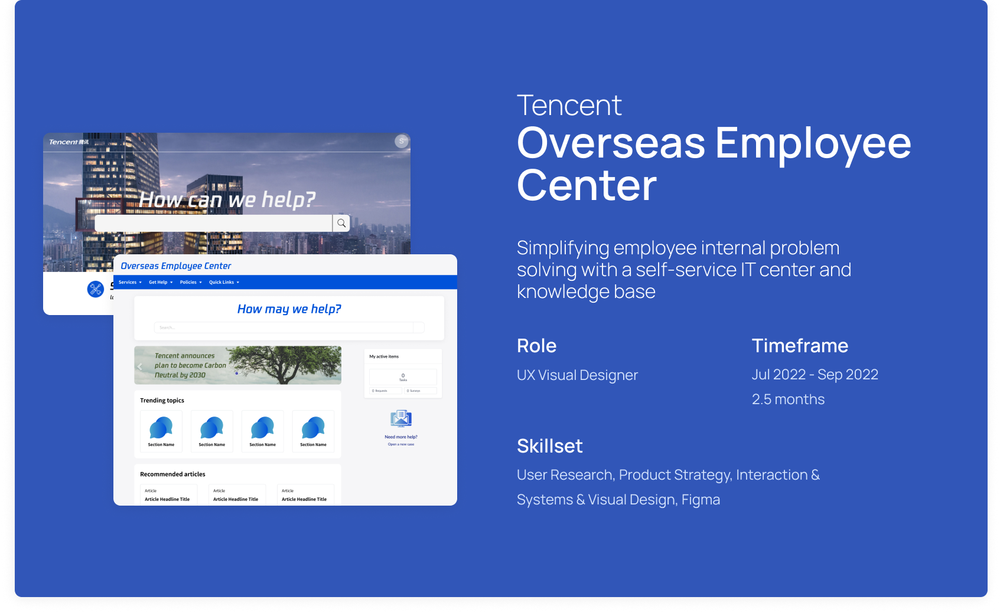

Project Overview
Simplifying employee internal problem solving with a self-service IT center and knowledge base
Tencent is one of the world's largest leading conglomerates, with domains ranging over all internet-based technologies, from social media and entertainment to venture capital and investment.
Tencent Americas is rapidly expanding and hiring new employees, and many new hires often feel overwhelmed and confused by all the different forms, tools, and internal resources they interact with during the onboarding process.
I set out to identify root problems and transform those insights into tangible changes in both user journey and visual design, to streamline and simplify the experience for everyone.
Tencent Americas is rapidly expanding and hiring new employees, and many new hires often feel overwhelmed and confused by all the different forms, tools, and internal resources they interact with during the onboarding process.
I set out to identify root problems and transform those insights into tangible changes in both user journey and visual design, to streamline and simplify the experience for everyone.